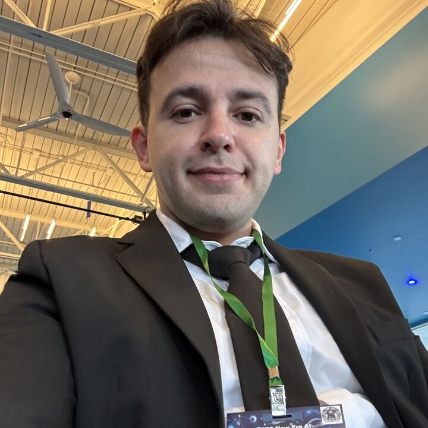

Cagri Temel
Yapay Zeka / ML Mühendisi · Araştırmacı · Kurucu Ortak & CTO, Hezarfen LLC
Güvenilir ve açıklanabilir yapay zeka geliştiriyorum: otonom robotlar için güvenli Chain-of-Thought akıl yürütme ve yüksek riskli alanlar için yorumlanabilir makine öğrenmesi sistemleri.
Hakkımda
Yapay zeka ve makine öğrenmesi mühendisi ve araştırmacıyım; aynı zamanda Hezarfen LLC'nin Kurucu Ortağı ve Teknoloji Direktörüyüm (CTO). Şirkette, yapay zeka destekli bir gayrimenkul (PropTech) ve hukuk teknolojisi (LegalTech) platformu olan Vardenus'un teknik vizyonunu yönetiyorum. Çalışmalarım açıklanabilir yapay zeka, yapay zeka güvenliği ve uygulamalı büyük dil modeli sistemlerinin kesişiminde yer alıyor; odağım ileri modelleri güvenilir kılmak: kaynağa dayalı, denetlenebilir ve yüksek riskli ortamlarda güvenle kullanılabilir.
Bir IEEE Senior Member ve IEEE Computational Intelligence Society Senior Üyesi olarak güncel araştırmam, otonom robotlar için güvenli ve yorumlanabilir Chain-of-Thought akıl yürütme üzerine yoğunlaşıyor. Bu çalışma, IEEE Conference on Artificial Intelligence (CAI 2026) ve IEEE New Era AI World Leaders Summit gibi IEEE etkinliklerinde sunuldu. Topluluğa, çeşitli IEEE ve AAAI/ACM etkinliklerinde hakem ve program komitesi üyesi olarak katkı veriyorum.
Grand Canyon University'den Bilgisayar Bilimleri Yüksek Lisansı (GNO 3.89, Alpha Chi Onur Cemiyeti) ve İstanbul Aydın Üniversitesi'nden Elektrik-Elektronik Mühendisliği Lisansı derecelerine sahibim. Hem Amerika Birleşik Devletleri hem de Türkiye'de patentlerde mucitim ve Redmond, Washington'da yaşıyorum.
Araştırma Alanları
Açıklanabilir Yapay Zeka (XAI)
Model kararlarını izlenebilir ve denetlenebilir kılmak; düzenlemeye tabi, yüksek riskli ortamlarda kullanılan yapay zeka için izlenebilir akıl yürütme, kaynağa dayanma ve yönetişim.
Güvenli Chain-of-Thought Akıl Yürütme
Dil modeli akıl yürütmesini denetlenebilir bir kontrol artefaktı olarak ele alan çok katmanlı doğrulama; herhangi bir eylemden önce güvensiz veya halüsinasyon adımlarını tespit eder.
Güvenilir Otonom Sistemler
Her eylemi sensör kanıtına geri bağlayan, EU AI Act ve ISO 13482 kapsamında denetlenebilirlik için tasarlanmış robot karar çerçeveleri.
Yorumlanabilir ML / Neural Trees
Sinir ağlarını karar ağacı şeffaflığıyla birleştiren mimariler; gürültü ve eksik veri altında sağlam, açıklanabilir tahminler.